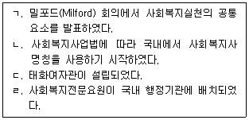

시험결과
확인
사회복지사-1급(2교시) (2023-01-14 기출문제)
1과목: 사회복지 실천론
1. 사회복지실천의 역사적 발달과정을 발생한 순서대로 옳게 나열한 것은?

- ㄱ - ㄴ - ㄷ - ㄹ
- ㄱ - ㄷ - ㄴ - ㄹ
- ㄱ - ㄷ - ㄹ - ㄴ
- ㄷ - ㄱ - ㄴ - ㄹ
- ㄷ - ㄱ - ㄹ - ㄴ
(정답률: 알수없음)

- ㄷ: 사회복지는 기독교의 자선사상에서 시작되었다.
- ㄱ: 19세기 말부터 20세기 초까지는 자선사업이 주를 이루었으며, 이후에는 사회복지사업이 발전하였다.
- ㄴ: 사회복지사업의 발전과 함께 사회복지교육이 이루어졌다.
- ㄹ: 현재는 사회복지사업과 사회복지교육이 함께 이루어지며, 사회복지의 범위와 역할이 점차 확대되고 있다.
이유는 각 보기의 내용을 순서대로 비교해보면 위와 같이 나열됩니다.